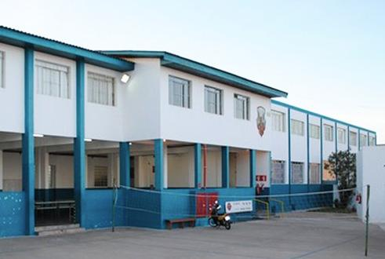

<!DOCTYPE html>
<html lang="en">
<head>
    <link rel="stylesheet" href="style.css">
    <link rel="preconnect" href="https://fonts.googleapis.com">
    <link rel="preconnect" href="https://fonts.gstatic.com" crossorigin>
    <link href="https://fonts.googleapis.com/css2?family=Poppins:wght@400;700&display=swap" rel="stylesheet">
    <meta charset="UTF-8">
    <meta http-equiv="X-UA-Compatible" content="IE=edge">
    <meta name="viewport" content="width=device-width, initial-scale=1.0">
    <title>Document</title>
</head>
</html>
    
<body>
    <header class="cabecalho">
        
        <ul class="cabecalho-lista-item">
            <li class="cabecalho-lista-item">Estudante</li>
            <li class="cabecalho-lista-item">Escola</li>
        </ul>
    </header>
    <section class="escola">
        <div class="escola-conteudo">
        <h2 class="escola-titulo">Sobre a Escola</h2>
        <p class="escola-texto-um">O colégio foi fundado em 1800, pelos dois irmãos venezianos, Marcos e Antônio Cavanis. A coordenação atua é dirigida pela diretora Leila, e vice-diretora Noeli. O telefone é (42) 32325201. </p>
        <p class="escola-texto-dois">A turma mais engajada é a Segunda série C. Uma turma diversa e animada, as vezes, um pouco bagunceira, mas que entrega excelentes resultados!</p>
        </div>
        
    </section>
    <section class="estudante">
        <h2 class="estudante-titulo">Quem são nossos estudantes? </h2>
        

    </section>
</body>
</html>
